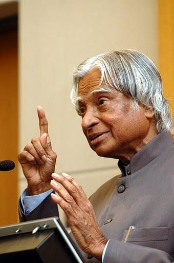

A .P .J Abdul Kalam
1931 - 2015
𝓜𝓲𝓼𝓼𝓲𝓵𝓮 𝓜𝓪𝓷 𝓸𝓯 𝓘𝓷𝓭𝓲𝓪
Avul Pakir Jainulabdeen Abdul Kalam ( 15 October 1931 – 27 July 2015) was an Indian aerospace scientist and statesman who served as the president of India from 2002 to 2007. Born and raised in a Muslim family in Rameswaram, Tamil Nadu, Kalam studied physics and aerospace engineering. He spent the next four decades as a scientist and science administrator, mainly at the Defence Research and Development Organisation (DRDO) and Indian Space Research Organisation (ISRO) and was intimately involved in India's civilian space programme and military missile development efforts. He was known as the "Missile Man of India" for his work on the development of ballistic missile and launch vehicle technology. He also played a pivotal organisational, technical, and political role in Pokhran-II nuclear tests in 1998, India's second such test after the first test in 1974.
𝓑𝓲𝓸𝓰𝓻𝓪𝓹𝓱𝓲𝓮𝓼
- 11th President: Served as President of India from 2002 to 2007, elected with support from both major political parties.
- Nuclear Tests: Served as Chief Scientific Adviser to the Prime Minister and played a major role in the Pokhran-II nuclear tests in 1998.
- Missile Development: Played a key role in developing missiles like Agni and Prithvi, earning the nickname "Missile Man".
- Key Projects: Project Director for India's first indigenous Satellite Launch Vehicle (SLV-III), which placed the Rohini satellite in orbit in 1980
- DRDO & ISRO: Joined the Defence Research and Development Organisation (DRDO) in 1960, later moving to the Indian Space Research Organisation (ISRO) in 1969
- Engagement with Youth: He was exceptionally popular for his accessibility and dedicated his time to meeting and inspiring student
- Post-Presidency: He returned to teaching, serving as a visiting professor at various Indian Institutes of Management (IIMs).